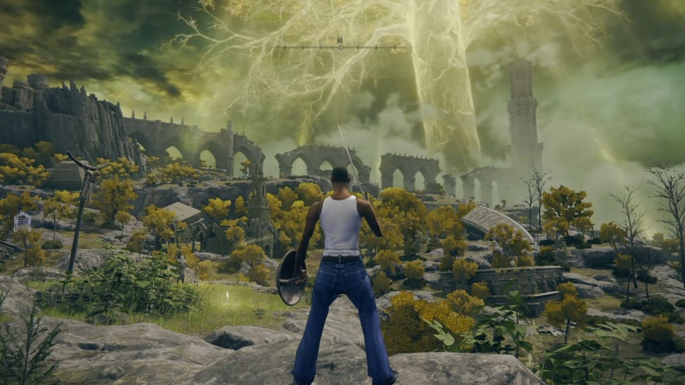
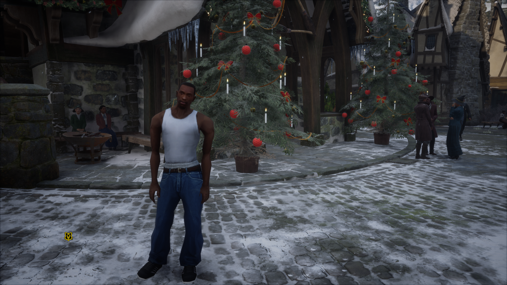
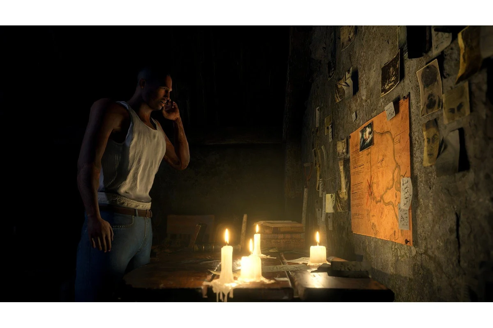
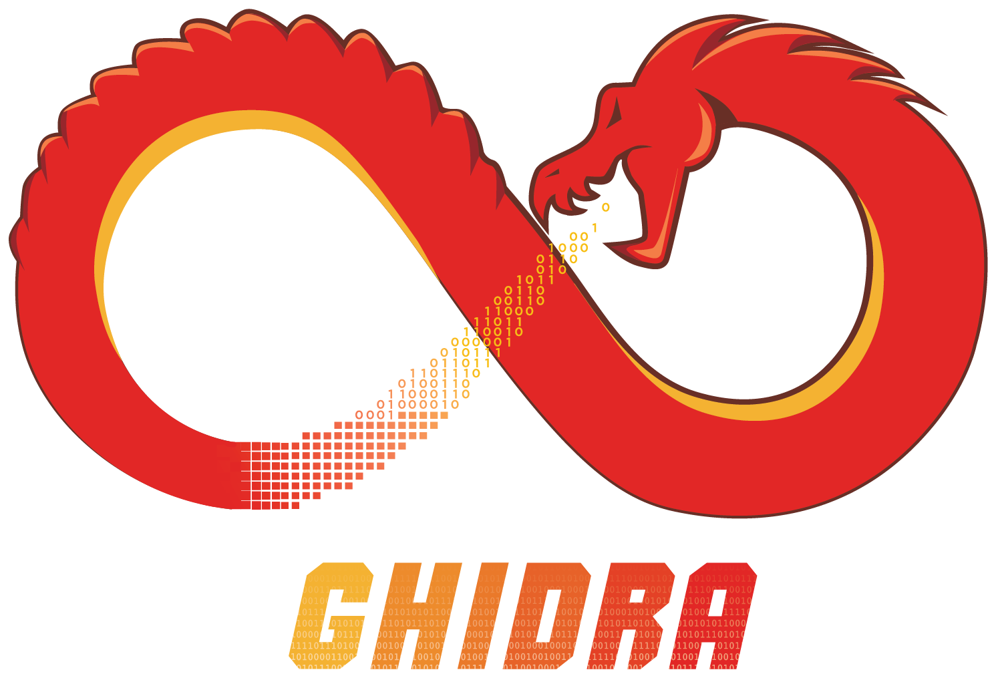
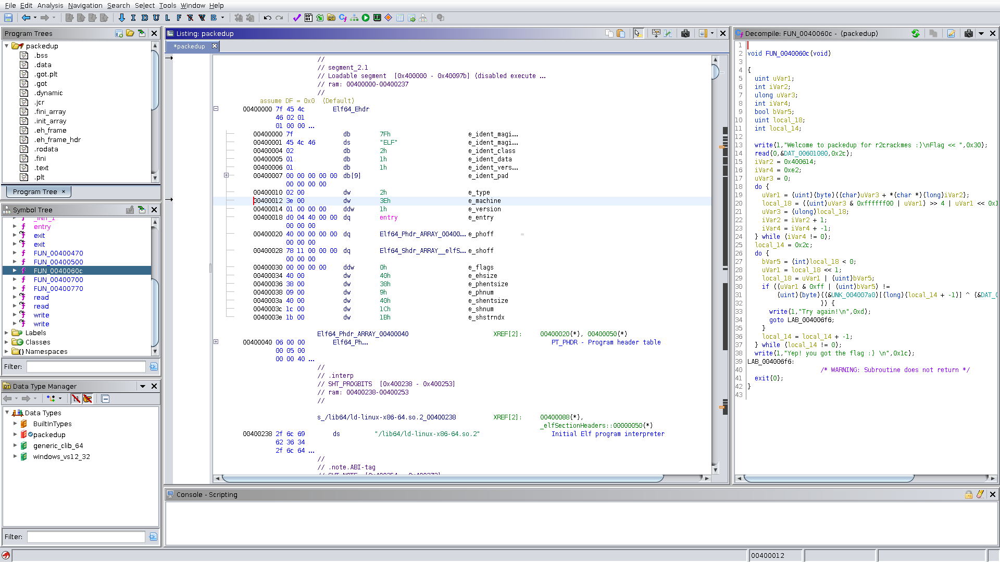

Один разработчик
Mario × Elden Ring
В мире Elden Ring работают прыжки, удары и физика Super Mario 64. Меняется не модель, а управление всей игрой.
проект ER MarioИнтерактивная история · 7 минут
Закрытые цифровые миры больше не выглядят непроницаемыми.
листайте01 · Старый моддинг
Модель героя заменили. Си-Джей машет мечом как персонаж Elden Ring, колдует как герой Hogwarts Legacy и двигается как Леон в Resident Evil.



Это просто скин. Забавно, но по сути ничего не изменилось: новая внешность управляет старым персонажем.
02 · Современные эксперименты
Герой приносит в чужой мир собственное движение, физику и способности. Это уже принципиальное изменение геймплея.
В мире Elden Ring работают прыжки, удары и физика Super Mario 64. Меняется не модель, а управление всей игрой.
проект ER MarioSpider-Man раскачивается по Готэму. Две запущенные игры обмениваются миром, движением и изображением.
проект ArkWebОтдельные люди и маленькие команды получили возможность менять саму суть больших игр.
03 · Как это делают
Исследователь наблюдает за игрой, находит нужную часть программы и проверяет изменения прямо в игре.
Волшебной кнопки нет. Но современный набор инструментов позволяет маленькой команде сделать то, для чего раньше требовались специалисты и годы работы.
04 · Ghidra

Агентство национальной безопасности создало Ghidra для исследования программ. В 2019 году АНБ бесплатно открыло её для всех.

Ghidra не делает мод сама. Она помогает человеку увидеть внутреннее устройство игры и найти части, отвечающие за движение, физику и правила.
05 · Почему сейчас
Инструменты стали бесплатнее, знания доступны онлайн, а ИИ помогает разбираться в незнакомом коде и быстрее проверять идеи.
Главный сдвиг уже произошёл: отдельные энтузиасты получили возможность менять не детали, а саму суть и геймплей больших игр.
06 · Практическая сила права
Правообладатель может остановить большой публичный проект. Но вернуть опубликованное знание в состояние «никто этого не знает» уже нельзя.
Авторское право остаётся сильным против распространения и бизнеса. Но оно всё хуже обеспечивает полный контроль над тем, что человек способен узнать и изменить на собственном компьютере.
07 · Следующие десять лет
Когда игра работает на компьютере пользователя, её будут изучать, менять и соединять с другими играми.
Защищать код и часто обновлять игру. Это замедляет исследователей, но требует постоянных затрат.
Код, которого нет у пользователя, нельзя непосредственно декомпилировать. Можно видеть лишь его ответы.
Официальные инструменты, лицензии и площадки для модов превращают неизбежное творчество в экосистему.
самый устойчивый путьСамый устойчивый путь для одиночных игр: дать сообществу официальные инструменты и превратить пересборку игр в легальную экосистему.
Вывод
Правообладатель сохраняет права на продажу и распространение. Но он всё хуже контролирует, что люди способны сделать с игрой на собственном компьютере.
Проверяемые материалы
ER Mario переносит логику SM64, но не является полной декомпиляцией Elden Ring.
ArkWeb соединяет две одновременно работающие игры, а не сливает их исходный код.
Недоступный серверный код нельзя непосредственно декомпилировать без самого бинарника.
Видео и изображения встроены локально. Кадры с Си-Джеем используются как примеры замены модели. Логотип и интерфейс Ghidra взяты из официального проекта АНБ и Wikimedia Commons.